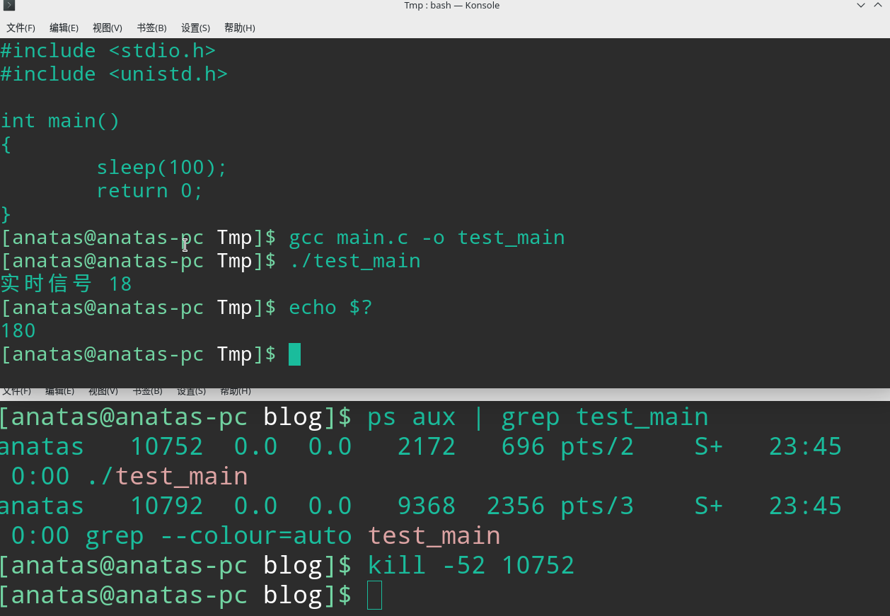
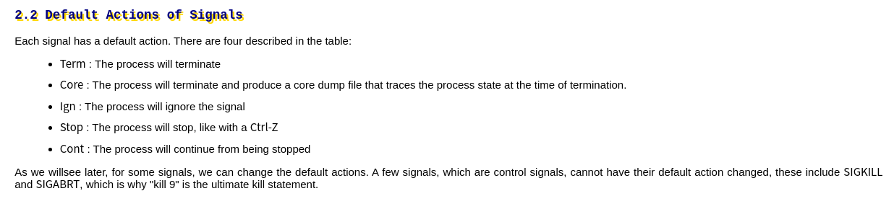
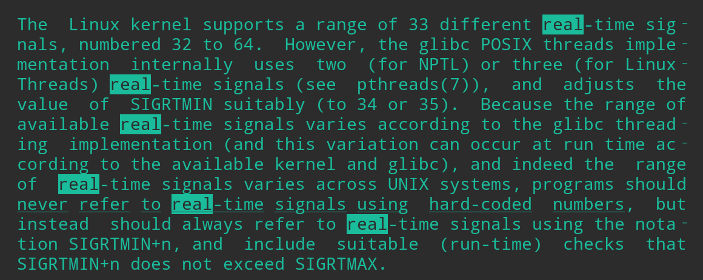
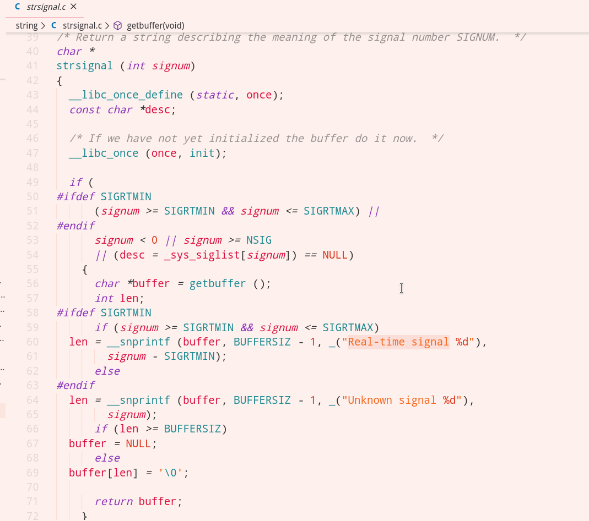
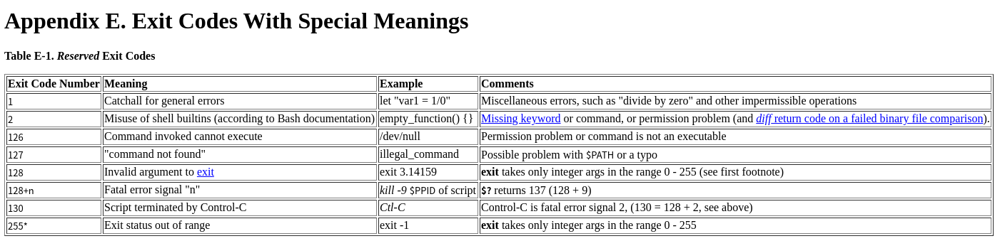

引发问题的打印

一个正常运行的进程，在收到52号信号后，打印了”实时信号 18“，然后便异常退出了，异常退出码是180。
问题以如下几个：
- 进程为什么会异常退出
- 18号实时信号跟52号信号有什么关系
- 是什么地方打印了提示内容
- 退出码180跟52有什么关系
进程为什么会退出

根据man page里的描述，信号的默认处理行为有四种，52号信号属于实时信号，一个进程收到实时信号的默认行为，就是直接终止进程。
18号实时信号跟52号信号有什么关系

根据man page里的描述，实时信号总共有32个，起始编号从SIGRTMIN开始，SIGRTMIN的值由Glibc决定，一般为34或35。显然，此处的52 = 34 + 18。即52号信号，是 “实时信号 18”的另一种描述。
是什么地方打印了提示内容
粗略分析，有3个地方可能打印了该内容，分别为kernel, shell, glibc。
通过对源码的分析，一一检索之后，发现是glibc打印了该提示。

这个打印是由glibc中的strsignal函数产生的。
退出码180跟52有什么关系

如图所示，180表示128 + 52，表示进程是被52号信号停止的。